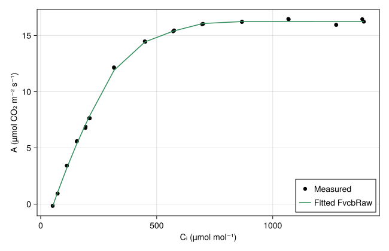
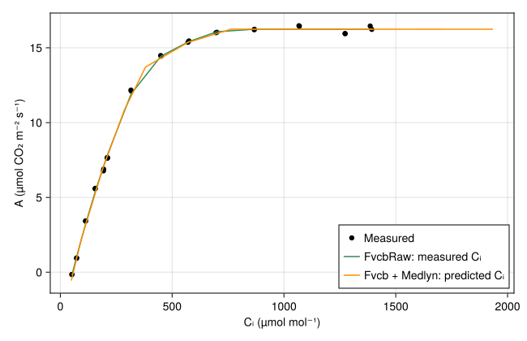

Parameter Fitting
This tutorial takes a fit through to a comparison with observations: read gas-exchange data, estimate photosynthesis parameters, simulate the measured CO₂ response curve, and inspect where predictions agree or disagree.
Read the measurements
Evaluation.fit(ModelType, data; options...) selects a fitting method for the given model. It returns named parameter values that can be passed to a new model. The required columns depend on the model being fitted.
For Fvcb, the data must contain measured net assimilation (A, µmol CO₂ m⁻² s⁻¹), leaf temperature (Tₗ, °C), absorbed photon flux (aPPFD, µmol photons m⁻² s⁻¹), and intercellular CO₂ concentration (Cᵢ, µmol mol⁻¹). Here we read the WALZ file bundled with the package:
using PlantBiophysics, PlantSimEngine, PlantMeteo, Dates, DataFrames, CairoMakie
file = joinpath(pkgdir(PlantBiophysics), "test", "inputs", "data", "P1F20129.csv")
observations = read_walz(file; ntasks=1)
filter!(row -> row.curve ∉ ("Rh Curve", "ligth Curve"), observations)
first(select(observations, :curve, :Tₗ, :aPPFD, :Cᵢ, :A), 5)| Row | curve | Tₗ | aPPFD | Cᵢ | A |
|---|---|---|---|---|---|
| String15? | Float64 | Float64 | Float64? | Float64? | |
| 1 | CO2 Curve | 26.44 | 1274.91 | 192.911 | 6.77484 |
| 2 | CO2 Curve | 26.44 | 1274.91 | 193.668 | 6.88872 |
| 3 | CO2 Curve | 26.38 | 1275.0 | 155.41 | 5.57472 |
| 4 | CO2 Curve | 26.37 | 1275.6 | 156.248 | 5.60771 |
| 5 | CO2 Curve | 26.41 | 1274.75 | 113.152 | 3.42669 |
We exclude the humidity and light curves, where temperature varies. "ligth Curve" is the spelling used in the source file.
Readers are available for read_licor6400, read_licor6800, read_walz, read_ciras4, and read_ess_dive. They return a DataFrame using the package's variable names and units. Check the required columns, units, and missing values before fitting.
Fit photosynthesis parameters
The fit estimates four capacities at a chosen reference temperature. Here that temperature is 25 °C:
fitted = Evaluation.fit(Fvcb, observations; Tᵣ=25.0)(VcMaxRef = 46.24677841174592, JMaxRef = 80.36773471055639, RdRef = 0.499495043750854, TPURef = 5.596944472641999, Tᵣ = 25.0)VcMaxRef, JMaxRef, RdRef, and TPURef describe Rubisco activity, electron transport, respiration in the light, and triose-phosphate utilization, respectively. Tᵣ is returned alongside them so the fitted parameters retain their reference temperature. Other parameters keep their default values unless you pass them to the fitting method.
Predict the CO₂ response curve
To inspect the fit, select the CO₂ curve and order its points by measured Cᵢ. FvcbRaw uses that measured Cᵢ directly, matching the calculation used during fitting.
co2_curve = subset(observations, :curve => ByRow(==("CO2 Curve")))
sort!(co2_curve, :Cᵢ)
photosynthesis = FvcbRaw(; fitted...)
A_sim = map(eachrow(co2_curve)) do row
scene = leaf_scene(
photosynthesis;
status=Status(Tₗ=row.Tₗ, aPPFD=row.aPPFD, Cᵢ=row.Cᵢ),
)
run!(scene)
model_object(scene, :leaf).status.A
end
comparison = select(co2_curve, :Cᵢ, :A => :A_measured)
comparison.A_simulated = A_sim
first(comparison, 6)| Row | Cᵢ | A_measured | A_simulated |
|---|---|---|---|
| Float64? | Float64? | Float64 | |
| 1 | 51.7036 | -0.151667 | -0.199125 |
| 2 | 51.7086 | -0.15767 | -0.20059 |
| 3 | 72.8297 | 0.932291 | 1.03639 |
| 4 | 73.0643 | 0.952481 | 1.04978 |
| 5 | 112.554 | 3.41892 | 3.2002 |
| 6 | 113.152 | 3.42669 | 3.23804 |
Each row is a separate measurement, so we run one small simulation per row. A vector stored in Status would be a single vector-valued variable; it would not automatically mean successive observations.
fig = Figure(size=(650, 420))
ax = Axis(fig[1, 1]; xlabel="Cᵢ (µmol mol⁻¹)", ylabel="A (µmol CO₂ m⁻² s⁻¹)")
scatter!(ax, co2_curve.Cᵢ, co2_curve.A; label="Measured", color=:black)
lines!(ax, co2_curve.Cᵢ, A_sim; label="Fitted FvcbRaw", color=:seagreen)
axislegend(ax; position=:rb)
fig
The curve shows how the fitted model reproduces the observations. A numerical summary is also useful:
(RMSE=Evaluation.RMSE(co2_curve.A, A_sim),)(RMSE = 0.1745539382895818,)RMSE has the same units as assimilation. These observations contributed to the fit, so this measures agreement with the fitting data. Assess prediction on independent measurements before using the parameters in other conditions.
Try the coupled photosynthesis model
Fvcb calculates Cᵢ together with a stomatal-conductance model, rather than taking measured Cᵢ as input. We can reuse the fitted biochemical parameters and compare that additional calculation.
The following uses Medlyn(0.03, 12.0), prescribed Dₗ=0.1 kPa, Cₛ=Cₐ, and wind speed of 10 m s⁻¹ in the weather description. These conductance parameters and prescribed conditions are illustrative; they were not estimated by the photosynthesis fit above.
coupled_values = map(eachrow(co2_curve)) do row
meteo = Atmosphere(
T=row.T, P=row.P, Rh=row.Rh, Cₐ=row.Cₐ, Wind=10.0, duration=Hour(1),
)
scene = leaf_scene(
Fvcb(; fitted...),
Medlyn(0.03, 12.0);
status=Status(Tₗ=row.Tₗ, aPPFD=row.aPPFD, Cₛ=row.Cₐ, Dₗ=0.1),
environment=meteo,
)
run!(scene)
leaf = model_object(scene, :leaf)
(A=leaf.status.A, Cᵢ=leaf.status.Cᵢ, Gₛ=leaf.status.Gₛ)
end
coupled = DataFrame(coupled_values)
first(coupled, 6)| Row | A | Cᵢ | Gₛ |
|---|---|---|---|
| Float64 | Float64 | Float64 | |
| 1 | -0.54583 | 49.4 | 0.001 |
| 2 | -0.546169 | 49.26 | 0.001 |
| 3 | 2.1957 | 93.6252 | 0.920707 |
| 4 | 2.23069 | 94.2681 | 0.92872 |
| 5 | 6.97058 | 190.889 | 1.41647 |
| 6 | 6.9702 | 190.782 | 1.41718 |
Plot each prediction against its own Cᵢ, keeping the observations unchanged:
fig_coupled = Figure(size=(650, 420))
ax_coupled = Axis(
fig_coupled[1, 1]; xlabel="Cᵢ (µmol mol⁻¹)", ylabel="A (µmol CO₂ m⁻² s⁻¹)",
)
scatter!(ax_coupled, co2_curve.Cᵢ, co2_curve.A; label="Measured", color=:black)
lines!(ax_coupled, co2_curve.Cᵢ, A_sim; label="FvcbRaw: measured Cᵢ", color=:seagreen)
order = sortperm(coupled.Cᵢ)
lines!(
ax_coupled, coupled.Cᵢ[order], coupled.A[order];
label="Fvcb + Medlyn: predicted Cᵢ", color=:darkorange,
)
axislegend(ax_coupled; position=:rb)
fig_coupled
Differences now reflect the additional conductance calculation and its assumptions, not a second fit. To estimate conductance parameters too, Evaluation.fit(Medlyn, data) requires A, Dₗ, Cₐ, and measured Gₛ. The conductance measurements must be for CO₂, in mol CO₂ m⁻² s⁻¹.
Fit a canopy light model
The same interface also estimates the Beer–Lambert extinction coefficient. This small illustrative dataset is separate from the leaf measurements above:
canopy_observations = DataFrame(
LAI=[1.0, 2.0, 3.0],
Ri_PAR_f=[300.0, 300.0, 300.0],
aPPFD=[480.0, 770.0, 940.0],
)
light_fit = Evaluation.fit(Beer, canopy_observations)(k = 0.4096769403637491,)Ri_PAR_f is incident PAR in W m⁻² and aPPFD is absorbed PAR in µmol photons m⁻² s⁻¹, both per unit ground area. LAI is leaf area per unit ground area. The fit converts each observation's absorbed fraction to an extinction coefficient and returns their mean.
Use the coefficient in a canopy simulation and compare the predicted values:
canopy_predictions = map(eachrow(canopy_observations)) do row
scene = CompositeModel(
Object(:plant; scale=:Plant, status=Status(LAI=row.LAI));
applications=(
ModelSpec(Beer(light_fit.k); name=:canopy_light, on=One(scale=:Plant)),
),
environment=Atmosphere(
T=25.0, Wind=1.0, P=101.3, Rh=0.5,
Ri_PAR_f=row.Ri_PAR_f, duration=Hour(1),
),
)
run!(scene)
model_object(scene, :plant).status.aPPFD
end
transform(canopy_observations, :aPPFD => (_ -> canopy_predictions) => :aPPFD_simulated)| Row | LAI | Ri_PAR_f | aPPFD | aPPFD_simulated |
|---|---|---|---|---|
| Float64 | Float64 | Float64 | Float64 | |
| 1 | 1.0 | 300.0 | 480.0 | 460.842 |
| 2 | 2.0 | 300.0 | 770.0 | 766.778 |
| 3 | 3.0 | 300.0 | 940.0 | 969.878 |
See Light interception before using these canopy values as inputs to a leaf model: the area basis must be converted explicitly.